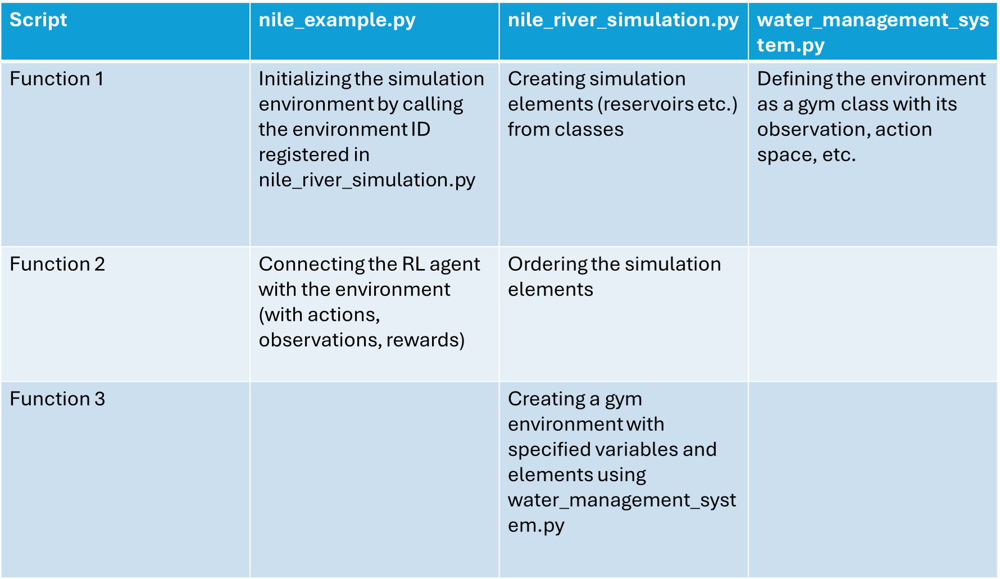

Code Structure¶
To successfully simulate an environment, morl4water package refers to multiple files and scripts which are dependent on each other. To have a clearer picture of how does a simulation work, this section goes through the code details and provide descriptions of the code logics. To better visualize the logics, the Nile river case and its file names will serve as an example.
In general there are three main scripts that provide the backbone of the simulation: nile_example.py, nile_river_simulation.py, water_management_system.py. They have different functions which can be summarised in the form of the table below:

The following sections will provide a detailed description of each script. Before diving in, however, the two summary diagrams below offer a quick overview of the top-level interactions between the scripts. Each block has an assigned function number, place where the function takes place and the description of the action. The first diagram illustrates the process for initializing the river environment:

The next diagram provides a summary of how the RL Agent interacts with the environment and how the environemnt is updated after each action.

Now with these short diagram summaries it should be easier to understand more details behind the main scripts described in the next sections.
nile_exmaple.py¶
This is the main simulation script with two crucial activities it is responsible for:
Initialising the simulation environment - Calling the environment with its ID to activate
nile_river_simulation.py.Connecting the RL Agent with the envrionment - Providing current observation states to RL Agent and passing its actions to
.step()method of the environment.
The first activity happens by creating water_management_system variable using the mo_gymnasium package as shown below:
water_management_system = mo_gymnasium.make('nile-v0')
Where nile-v0 refers to a default version of Nile environemnt as specified in nile_river_simulation.py file. The versions differ between each other only through the custom objectives. This setup aligns the morl4water environment with typical gym environments, ensuring that it behaves in a familiar way for those working with the gym framework.
The second activity happens in the run_nile() function. There, the environment is first reset using the .reset() method and then updated in a loop with actions provided by a Reinforcement Learning Agent or another source. The actions, stored in the action variable, are passed as an argument to the .step() method. With each iteration the observation states and rewards are recalculated and returned to the RL Agent which takes a new action based on this information. This loop continues until the simulation concludes or an environment constraint is violated. In the case of a violation, the variables final_truncated and final_terminated will trigger the loop to break.
As can be understood, .step() method is crucial since with every interation it returns a tuple of multiple important variables. Those include current states of the observation space (final_observation) and rewards (final_reward ) for every action. What happens exactly within .step() can be examined in water_management_system.py script located in morl4water/core/envs/.
nile_river_simulation.py¶
As mentioned before to start the whole simulation the environemnt must be first initialised. This initialisation refers to calling a function in nile_river_simulation.py which creates an instance of the gym environment class. In general the script actions can be summed up to:
Creating simulation elements - reservoirs etc. as instances of specific classes.
Ordering simulation elements - creating an ordered list to ensure that element updates align with the direction of water flow.
Creating an environment - as an instance of the gym environment class with all variables.
Defining simulation elements involves creating instances of classes for each component of the river system, such as reservoirs, flows, irrigation districts, and others. This setup takes place within the create_nile_river_env() function, where all elements follow a similar structure, as shown in the example of a reservoir below:
GERD_reservoir = Reservoir(
"GERD",
max_capacity=117500000000.0,
max_action=[10000],
integration_timestep_size=relativedelta(minutes=240),
objective_function=Objective.no_objective,
stored_water=15000000000.0,
evap_rates=np.loadtxt(data_directory / "reservoirs" / "evap_GERD.txt"),
evap_rates_timestep_size=relativedelta(months=1),
storage_to_minmax_rel=np.loadtxt(data_directory / "reservoirs" / "store_min_max_release_GERD.txt"),
storage_to_level_rel=np.loadtxt(data_directory / "reservoirs" / "store_level_rel_GERD.txt"),
storage_to_surface_rel=np.loadtxt(data_directory / "reservoirs" / "store_sur_rel_GERD.txt"),
)
As shown, each river element’s class may require a range of variables, and in some cases, external data files as well, depending on the specific requirements of that element. To better understand what variables and data files are needed for specific classes and what do they mean please refer to the inputs of specific classes in morl4water/models.
Once all river system elements have been assigned to a class it is possible to order them in water_systems entry when creating an instance of WaterManagementSystem class. This happens at the end of create_nile_river_env() function.
The actual creation of the environment happens when it’s registered version is called through water_management_system = mo_gymnasium.make('nile-v0') in nile_example.py. The name nile-v0 refers to the registered version of the enviornment which can be seen at the beginning of nile_river_simulation.py in this way:
register(
id='nile-v0',
entry_point='examples.nile_river_simulation:create_nile_river_env',
)
Now in this case, the instance created under water_management_system variable will be based on the gym environment’s class defined in water_management_system.py.
water_management_system.py¶
The role of water_management_system.pycan be quickly described as:
Providing implementation of the environment class - The class implementation includes all essential methods, covering the definition of observation, reward, and action spaces, as well as the core
.step()method responsible for updating the whole environment state.
This script holds the class description of the whole environment. It determines how observation and action space are handled and returned to nile_example.py. A very important part of the whole class is the step() method. It is called in nile_example.py and leads to the whole process of updates for every system element in the river flow acccording to the order from nile_river_simulation.py. Those element updates are initated in a loop where all water elements in the simulation correspond to water_systems list as shown below:
for water_system in self.water_systems:
water_system.current_date = self.current_date
if isinstance(water_system, ControlledFacility):
observation, reward, terminated, truncated, info = water_system.step(action[water_system.name])
elif isinstance(water_system, Facility) or isinstance(water_system, Flow):
observation, reward, terminated, truncated, info = water_system.step()
else:
raise ValueError()
The elements are organized into three main superclasses: ControlledFacility, Facility and Flow. All these types are updated through the .step() method of their respective superclass. Additionally, ControlledFacility elements receive an action input, as they are designed to be controlled by the agent.
At the end of each iteration, the .step() method in water_management_system.py returns a tuple of several variables to nile_example.py, including arrays of observations and rewards, after all elements have been updated. Each iteration corresponds to a time interval specified by timestep_size (usually one month). These outputs are then accessed by the RL Agent in nile_example.py, which uses the information to decide on its next action. This initiates another iteration, where the environment, stored in the water_management_system variable, undergoes an update via its .step() method. The loop continues in nile_example.py until the simulation completes or encounters errors.
As previously mentioned, each element in the environment activates its own .step() method during an update. To provide a clearer understanding of how this process works, the following sections will detail the state update mechanisms for different facilities (nodes) and flows.